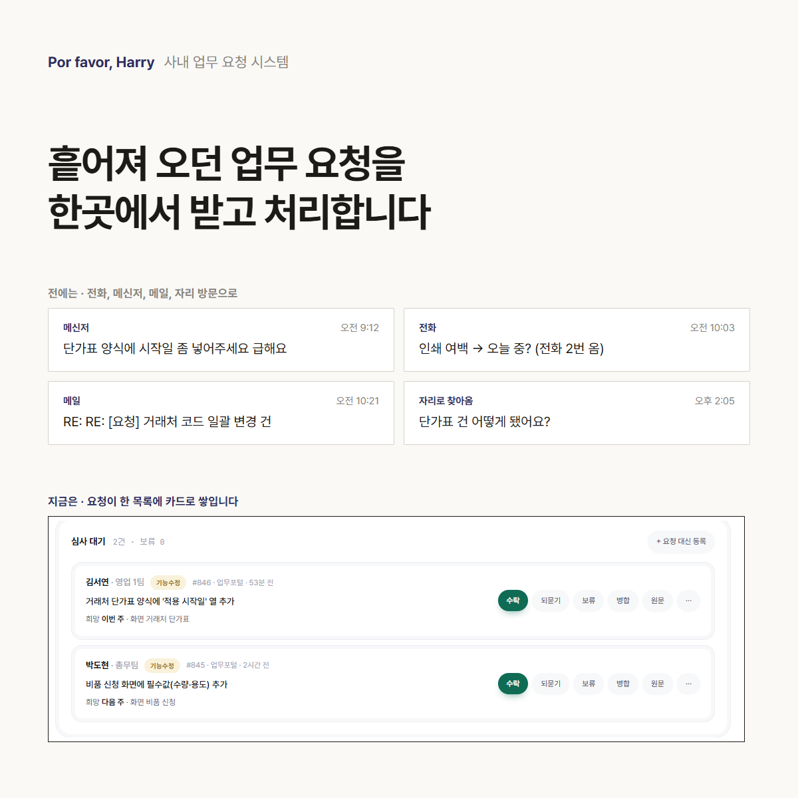
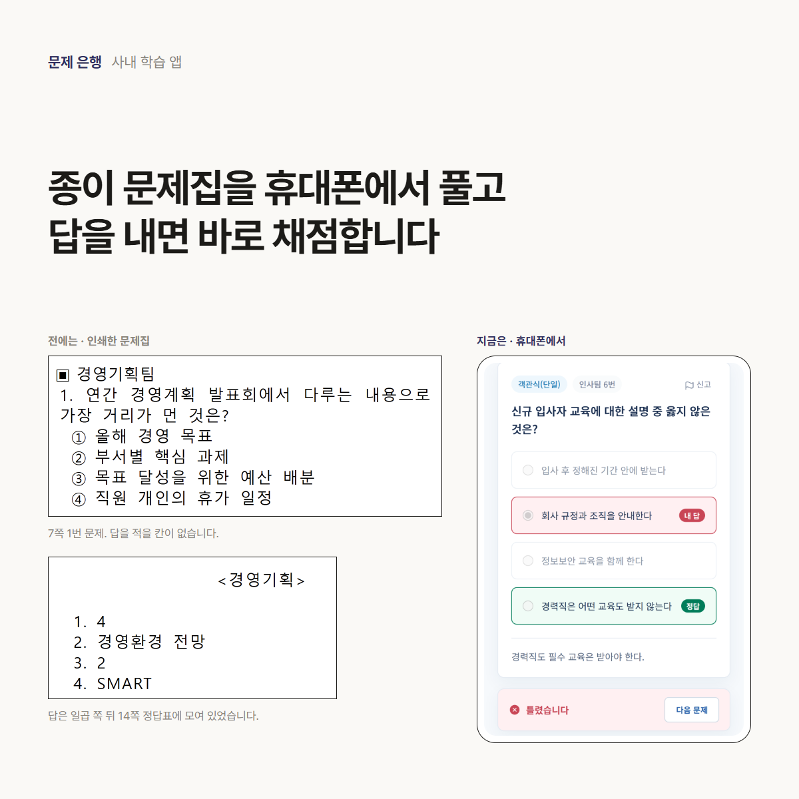
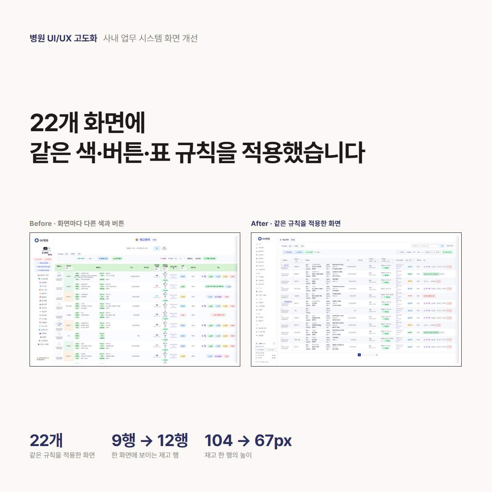

Prologue&
엑셀과 종이로 하던 업무를
사내 웹 시스템으로 만듭니다
요청목록_최종(2).xlsx
| 날짜 | 요청 | 담당 | 상태 |
| 9/12 | 단가표 수정 | ? | 확인중 |
| 9/13 | 비품 화면 | ||
| 9/13 | 단가표 건 | ? | ?? |
| 9/15 | 인쇄 여백 |
→
단가표 양식 수정처리 중9/19까지
비품 신청 화면검토9/22까지
인쇄 여백 수정완료9/15
요청목록_최종(2).xlsx
| 날짜 | 요청 | 담당 | 상태 |
| 9/12 | 단가표 수정 | ? | 확인중 |
| 9/13 | 비품 화면 | ||
| 9/13 | 단가표 건 | ? | ?? |
| 9/15 | 인쇄 여백 |
이런 업무를 맡겨 주세요
만들 수 있는 것
진행 순서
업무가 어디서 들어오고 누가 같은 내용을 몇 번씩 옮겨 적는지 먼저 확인합니다. 없어도 되는 단계를 뺀 뒤에 화면을 설계하고, 확인을 받은 다음 개발합니다.
패키지 범위
| STANDARD업무 하나 | DELUXE요청부터 처리까지 | PREMIUM여러 사람이 쓰는 시스템 | |
|---|---|---|---|
| 화면 | 5개 이하 | 10개 이하 | 20개 이하 |
| 권한 | 로그인 1종 | 2단계(쓰는 사람 · 담당자) | 3단계(쓰는 사람 · 담당자 · 관리자) |
| 엑셀 | 내려받기 | 내려받기 | 일괄 등록 · 내려받기, 기존 데이터 옮기기 |
| 기록 | – | 상태와 처리 기록 | 상태와 처리 기록, 변경 기록 |
| 모바일 | 대응 | 대응 | 대응 |
| 견줄 사례 | – | 업무 요청 시스템(화면 7개) | 사내 문제 풀이 앱(화면 20개) |
지금까지 만든 것

여러 경로로 흩어져 오던 요청을 한 목록에서 받습니다. 요청한 사람은 처리 상황을 화면에서 직접 확인합니다.
요청 양식 · 심사 대기 · 업무 목록 · 진행 상황
직원 약 200명이 해마다 인쇄해 풀던 문제집 1,220문항을 웹으로 옮겼습니다. 답을 내면 바로 채점되고, 지금도 운영하며 보완하고 있습니다.
풀이와 채점 · 풀이 기록 · 문제 변경 기록 · 엑셀 일괄 등록
화면마다 달랐던 색과 버튼을 공통 규칙으로 정하고 22개 화면에 적용했습니다. 재고 목록은 한 화면에 9행에서 12행이 보입니다.
디자인 규칙 · 목록 화면 · 첫 화면 · 로그인